In de landelijke pers wordt regelmatig aandacht besteed aan de groeiende vraag naar adequate hulp bij het huiswerk.
Ideaal voor kinderen die na school een zetje of extra uitleg nodig hebben, die moeite hebben met plannen en het aanbrengen van structuur,
maar ook voor die kinderen waarvan ouders na schooltijd niet thuis zijn.
Uit ervaring weten wij dat regelmaat in de begeleiding van een kind een grotere kans geeft op betere studieresultaten.
Door hun schoolwerk te leren plannen en agenderen kunnen de kinderen op een efficiëntere manier met hun huiswerk leren omgaan.
HBB is gevestigd aan de Koepellaan 8 in Bloemendaal, vlakbij de dorpskern van Bloemendaal op fietsafstand van een groot aantal scholen.
In ruime, zonnige lokalen maken de kinderen hun huiswerk en worden ze deskundig geholpen.
Leerlingen van de HBB hebben de beschikking over computer, internet, naslagwerken en woordenboeken.

HB Bloemendaal